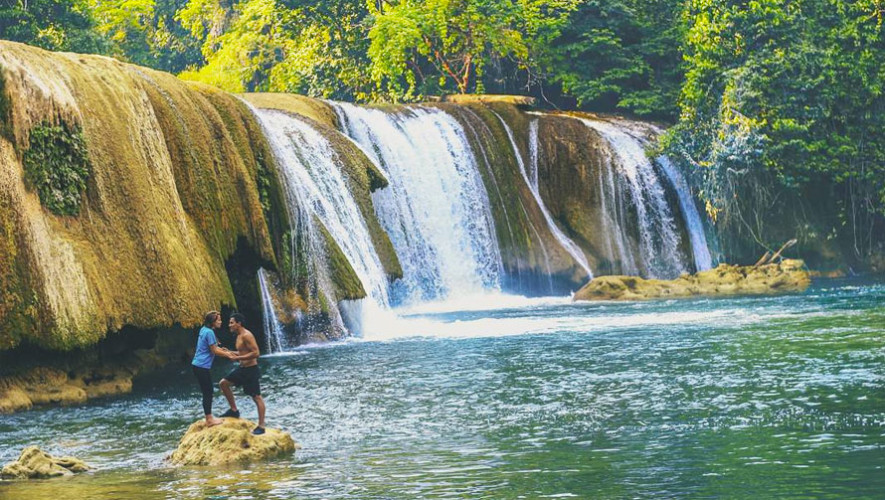
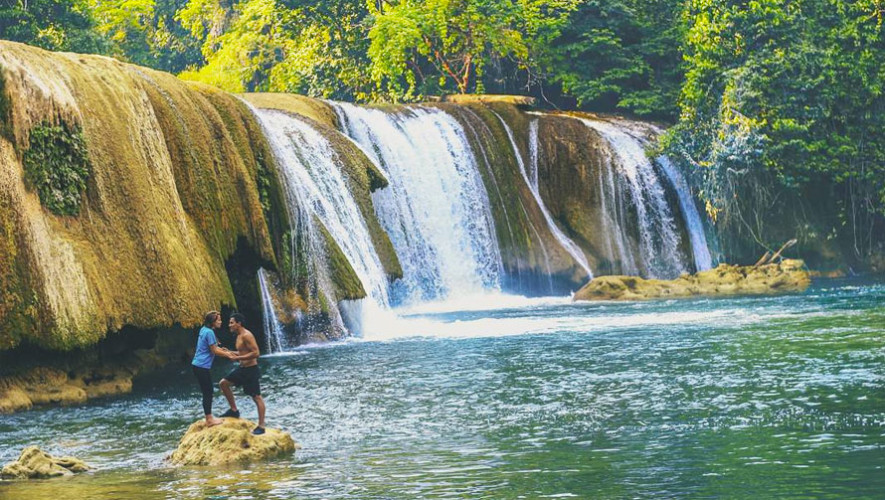
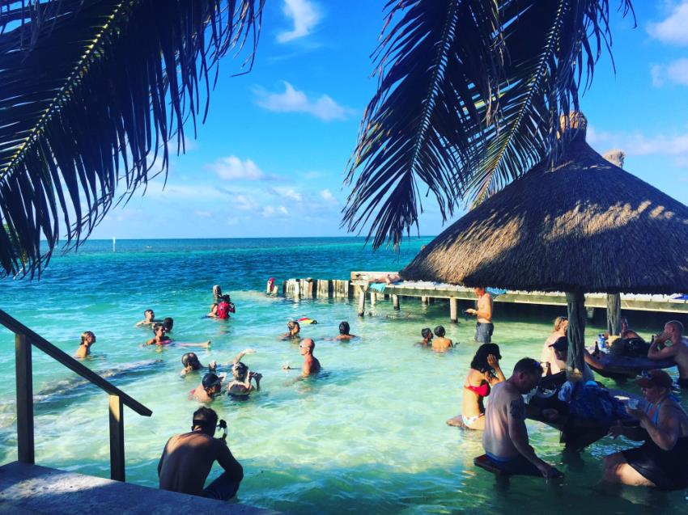

Las Conchas
Unos de los lugares mas bonitos de Guatemala que se cuentran en Alta Verapaz
Este lugar cuenta con un rio natural color turqueza
Unos de los lugares mas bonitos de Guatemala que se cuentran en Alta Verapaz
Este lugar cuenta con un rio natural color turqueza
Es uno de los lugares mas turisticos de Estados Unidos

Nueva York incluye 5 distritos que se ubican donde el río Hudson desemboca en el océano Atlántico.
Unos de los lugares mas bonitos que me llaman la atencion por sus playas
Uno de los lugares que deseo visitar